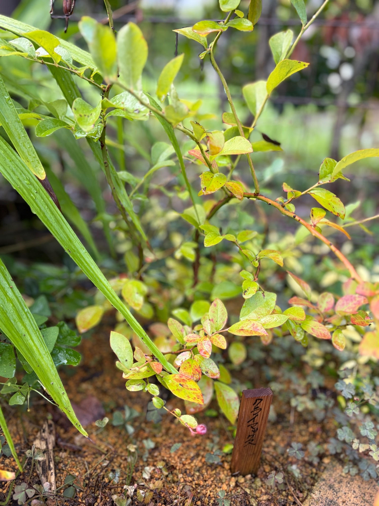

2026/09/05 3品種とも実をつけ、収穫を楽しみました。初めての夏を越したクライマックス
昨年12月16日に植え付けたブルーベリーが、今年は3品種ともしっかり実をつけてくれました。
地植えにしたクライマックスとプレミア、ポット植えにしたメンデイト。それぞれの株から収穫でき、実はヨーグルトに混ぜておいしくいただきました。購入したときに楽しみにしていた「自分の庭で育てたブルーベリーを食べること」が、実際の楽しみになりました。
残念ながら、実がついているところや収穫した実の写真は撮れていません。それでも、3品種とも実をつけ、おいしく食べられたことは、育て始めてからの大切な出来事として残しておきたいと思います。
今回の写真は、9月5日のクライマックスです。果実の写真に代わって、初めての夏を過ごした株の葉や枝の姿を記録します。
植え付けから約8か月半。収穫まで楽しむことができました
クライマックスを購入したのは、2025年12月13日です。そのときは黒い育苗ポットに入り、赤く色づいた葉と緑の葉が混じっていました。3日後の12月16日に地植えし、庭での生育が始まりました。
植え付け当日は、これから芽が動き、葉が広がり、いつか花や実を見せてくれるのかと楽しみにしていました。その株で今年、実際に収穫を楽しめたことがうれしいです。
9月5日は、植え付けから約8か月半になります。冬の植え付けから季節を重ね、夏には自分で育てた実を食べることができました。苗を迎えたときの期待が、食卓で味わう楽しみにつながりました。
一方で、最初の収穫を経験したからこそ、これからも株の姿を見ていきたいと思います。実を採れたことだけで一年を終えるのではなく、その後にどんな葉を残し、枝がどのような状態になっているのかも、生育記録として残していきます。
3品種とも、しっかり実をつけてくれました
今回うれしかったのは、クライマックスだけでなく、プレミアとメンデイトも実をつけてくれたことです。
購入時には、ラビットアイ系の異なる品種をそろえ、受粉のことも考えて育て始めました。地植えとポット植えという違いはありますが、結果として3品種とも収穫につながりました。
ただ、実がついたという結果だけで、どの品種の花粉がどの株の受粉に役立ったのかまでは分かりません。3品種それぞれの実付きには喜びを感じつつ、受粉の組み合わせについては、これからも開花の様子と合わせて見ていきたいと思います。
収穫量や果実の大きさを品種ごとに比べた記録は、今回の記事では残せません。それでも、まずは3品種とも実をつけてくれたことが、育て始めた年の大きな喜びになりました。
収穫した実は、ヨーグルトに混ぜていただきました
収穫したブルーベリーは、ヨーグルトに混ぜて食べました。
自分で育てた実がいつものヨーグルトに加わるだけで、食べる時間にも庭とのつながりを感じます。苗を選び、植え付けたところから始まったブルーベリーが、今度は食卓の楽しみになりました。
おいしくいただけたことが、何よりうれしいです。果実の大きさや甘さを細かく比べることとは別に、「育てた実を収穫して食べられた」という経験そのものに満足感があります。
今回は実の写真を撮れていませんが、ヨーグルトに混ぜて楽しんだことも含めて、わが家の最初の収穫の記録として残しておきます。次に収穫できたときには、実が枝についている姿や、収穫したときの様子も写真に残せたらと思います。
9月のクライマックスは、さまざまな色の葉を残しています
9月5日のクライマックスには、緑色や黄緑色の葉がついています。その中に、黄色みの強い葉や、赤色・赤紫色が混じる葉も見られます。
株全体が濃い緑にそろっているわけではなく、枝の場所によって葉の色が違います。写真の上側では黄緑色の葉が目立ち、下側へ広がる枝には赤みを帯びた葉がまとまっています。
一枚の葉の中でも、緑色や黄色に赤みが重なり、まだらに見えるものがあります。葉先や縁に赤みが出ている葉もあれば、葉の表面に広く赤色が混じっているものもあります。
昨年12月の植え付け時にも赤く色づいた葉はありましたが、季節が違うので、同じ色があるからといって同じ状態とは限りません。今の葉色をそのまま秋の紅葉と決めつけず、9月上旬の姿として残しておきたいと思います。
斑点や葉先の傷みも見られます
葉を近くで見ると、一部には黒っぽい斑点や褐色の部分があります。葉先や縁が傷んだように見えるものや、葉が少し反っているものも見られます。
収穫できたことはうれしい一方で、今の葉がすべてきれいな状態にそろっているわけではありません。果実を楽しんだ後の株にも、こうした葉の違いがあることを記録しておきます。
ただ、この姿だけで、暑さや乾燥、土の状態、病気など、どれか一つを原因として決めることはできません。黄色みや赤み、斑点が同時に見えるからこそ、色だけで判断せず、その後の変化も見ていきたいと思います。
これから同じ枝の葉がどう変わるのか、緑の葉がどのくらい残るのか、葉が落ちていく様子に違いがあるのか。次の記録でも、株全体と葉の両方を眺めていきたいです。
上へ伸びる枝と、横へ広がる枝
枝を見ると、上へ向かって伸びる細い枝と、左右へ広がる枝があります。右側へ伸びる枝には赤みがあり、緩やかに弧を描くような形になっています。
葉が続いてついている部分もあれば、葉と葉の間が空き、枝がよく見える部分もあります。下の方には小さな葉が集まった枝もあり、同じ株の中でも枝葉のつき方には違いがあります。
植え付け時の写真でも、上へ伸びる枝と横へ広がる枝が見られました。今回も、その両方が組み合わさった姿です。ただ、撮影する位置や枝の重なり方が違うため、写真だけで伸びた長さや増えた枝数を正確に比べることはできません。
それでも、冬の植え付け時の姿から、夏を過ごした9月の姿まで記録がつながりました。今後も同じ株を撮り続けることで、枝の広がり方や葉のつき方の変化が、少しずつ分かってくると思います。

周囲の植物と重なりながら育っています
クライマックスの周りには、細長い葉を伸ばす植物や、地面を覆う小さな植物があります。写真でも、それらの葉がクライマックスの枝葉に重なっています。
昨年12月の植え付け時は、株元や枝の形が比較的よく見えていました。今回は周囲の緑も重なり、庭全体の季節の違いを感じます。
その分、クライマックスだけの輪郭は見分けにくいところがあります。周囲の葉が重なって見える部分を、すべてクライマックスの葉として数えたり、茂っていると判断したりせず、自分の株の枝をたどりながら見ていきたいと思います。
株元には、植え付けたときの木製の名札があります。周囲の植物が増えた中でも、この場所で育て始めたクライマックスだと分かる目印になっています。
収穫の喜びと、その後の生育を続けて記録します
ブルーベリーを迎えたときには、まずは植え付け、その先に芽吹きや開花、収穫があることを楽しみにしていました。今年は3品種とも実をつけ、ヨーグルトに混ぜておいしく食べることができました。
果実の写真を残せなかったのは心残りですが、庭で育てたものを食べる楽しさを味わえたことは、これから育て続ける励みになります。
今のクライマックスには、緑や黄緑、赤みの混じった葉があり、斑点や傷みの見える葉もあります。収穫できた喜びとともに、その後の株の姿もありのまま残しておきたいと思います。
2026年9月5日。初めての収穫を楽しんだクライマックスを、これからも季節の変化とともに見守っていきます。